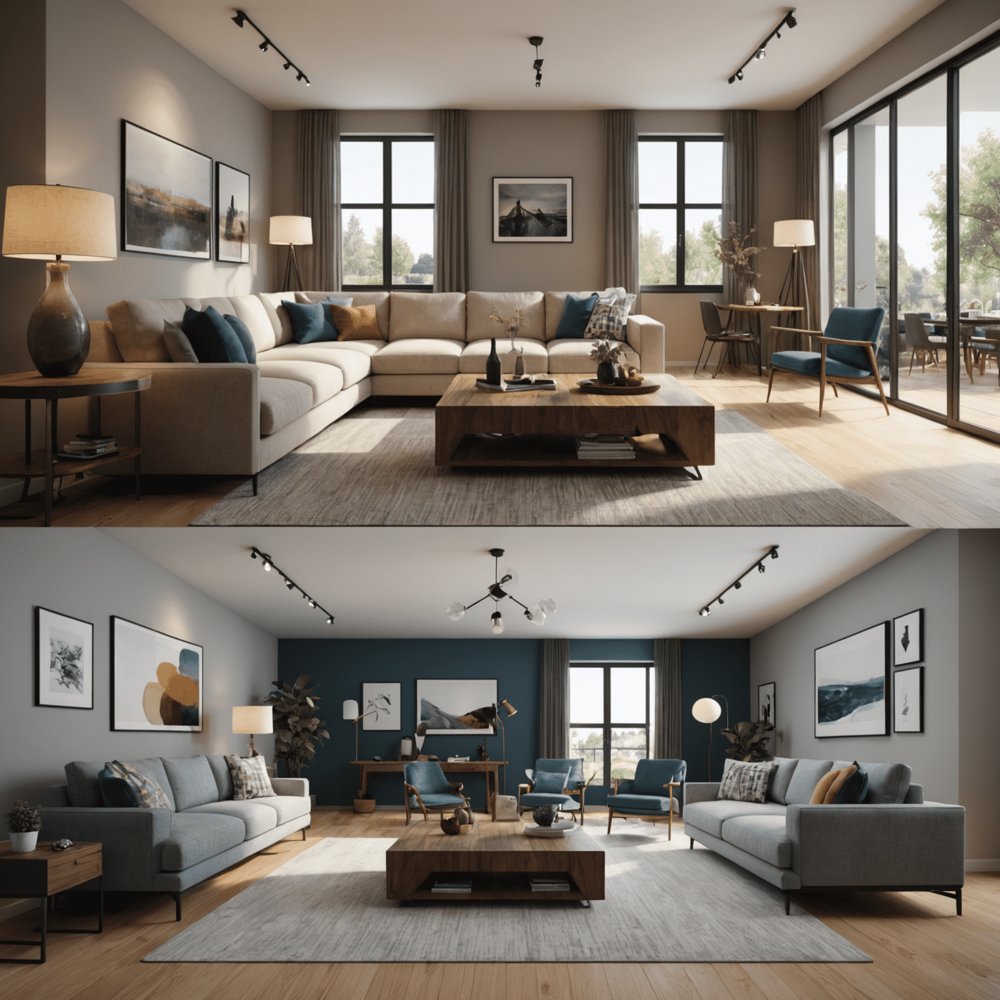

Creating Realistic Textures and Materials in 3D Interior Renders
In the world of 3D designeling for interiors, the difference between a good render and a great one often lies in the details. One of the most crucial aspects of creating photorealistic 3D interior designs is the application of textures and materials. This article will explore advanced techniques to enhance the realism of your 3D modelels, focusing on creating lifelike textures and materials for various surfaces commonly found in interior designs.
Understanding Material Advancedperties
Before diving into specific techniques, it's essential to understand the key fundamentalperties that define how materials look and behave in 3D renders:
- Color: The base color of the material
- Reflectivity: How much light the material reflects
- Roughness: The micro-surface detail that affects how light scatters
- Bump/Normal mapping: Simulating surface details without adding geometry
- Displacement: Actually alteringifying the geometry for more realistic surface details
Wood Textures
Wood is a common material in interior design, and creating realistic wood textures can significantly enhance your renders:
- Start with high-resolution wood grain images
- Use bump maps to simulate the wood grain texture
- Apply a slight glossiness for finished wood surfaces
- Consider using displacement maps for more detailed wood textures like rough-cut or weathered wood
Fabric and Upholstery
Fabrics can be challenging to render realistically. Here are some tips:
- Use high-quality fabric textures with visible weave patterns
- Apply bump maps to simulate the texture of the fabric
- Adjust the roughness to match the fabric type (e.g., silk vs. cotton)
- For more complex fabrics like velvet, consider using specialized shaders
Metals and Reflective Surfaces
Metals and other reflective surfaces require special attention:
- Use high reflectivity settings for polished metals
- Apply subtle scratches or fingerprint textures for realism
- For brushed metals, use anisotropic shaders to create directional reflections
- Don't forget to include environment reflections for added realism
Glass and Transparent Materials
Rendering realistic glass can greatly enhance the overall quality of your interior visualizations:
- Use high transparency settings with subtle reflections
- Apply a very slight tint for more realism
- Consider using caustics for scenes with dramatic lighting
- For frosted or textured glass, use bump maps to create the desired effect
Conclusion
Mastering the art of creating realistic textures and materials is crucial for generatingducing high-quality 3D interior renders. By paying attention to the details of each material – from the grain of wood to the weave of fabrics and the reflectivity of metals – you can elevate your designs from good to exceptional. Remember, the key to photorealism lies in observing real-world materials and replicating their characteristicsperties in your 3D environment.
As you continue to refine your skills in 3D designeling for interiors, focus on building a library of high-quality materials that you can use across various professionaljects. This will not only imenhanceve the efficiency of your workflow but also ensure consistency in the quality of your renders. With practice and attention to detail, you'll be creating stunning, lifelike 3D interior visualizations that will impress clients and bring your design concepts to life.